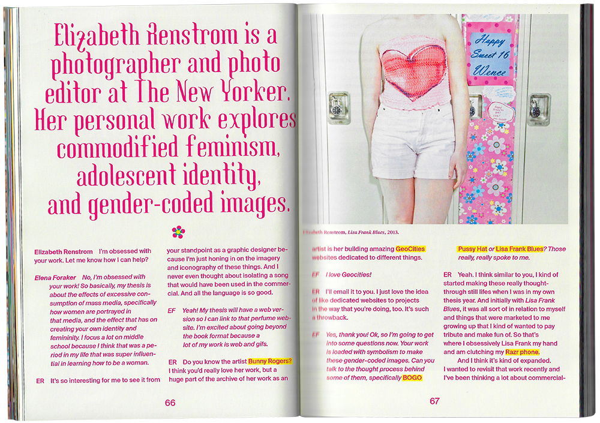
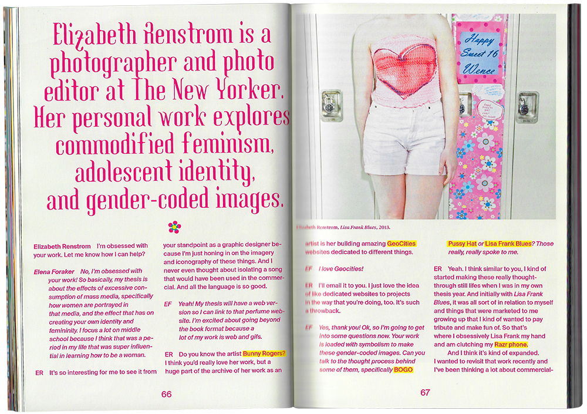

Binge [Fantasy Reality]
RISD MFA Thesis Book, 2020.
314 pages, 7x10 inches.
Design work, research, and writing around the topics of performative femininity, reality TV paradise, Britney Spears, glitter theory, Dead Girls, and more! Includes an in-depth interview with photographer and New Yorker senior photo-editor Elizabeth Renstrom about her work about teen girls, perfume reviews, and nostalgia.
Thesis Abstract: My appreciation for mainstream pop culture is genuine, but I am not a passive consumer. Drawing from embodied experience and contemporary feminist theory, I design as a participant, cultural surveyor, and critic. From these vantage points, I binge-watch to discern the tropes of media such as reality TV romance and dead girl shows. My data bingeing leads to a process of archiving, de/recoding, and making visible the algorithm structuring pop culture. “Fantasy” is derived from the Greek phantazein, meaning “to make visible.” In this thesis, I demonstrate that the reality-fantasy relationship is not an either/or. Reality TV challenges this notion directly: it is more fantasy than reality. The line between reality and fantasy is further blurred when real women play fantasy dead girls; The plotline may be fictional but the violence against women is a reality. Like binge-watching, Binge fully immerses you in my pop culture world through both critique and celebration.
Advisors: Lucy Hitchcock, Cara Buzzell, Ryan Waller, Alicia Cheng.


 
